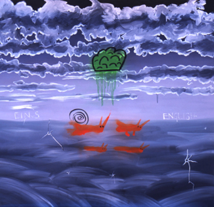
English - Eins Collaboration
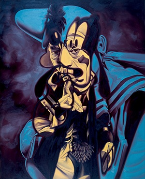
Goofy Chaney
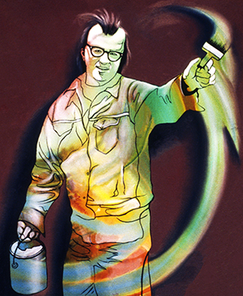
Jim C
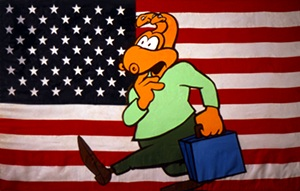
Love It or Leave It
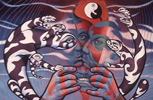
Multiple Personality
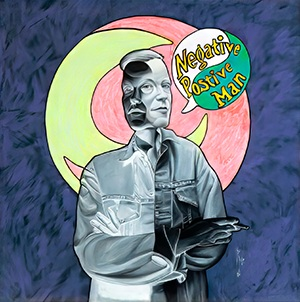
Negative Positive Man
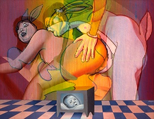
Rabbit Sex
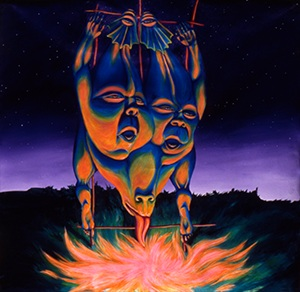
Sideshow Banner Bill Klaila Portrait
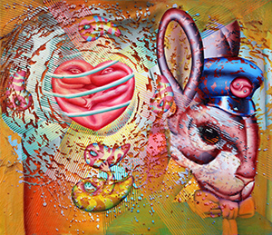
The Heart of a Hare
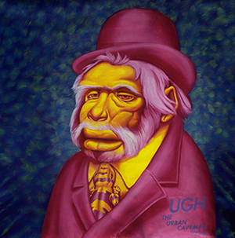
Ugh Banner
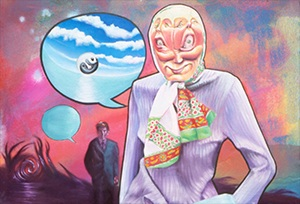
Waitress from Hell
Yin Yang